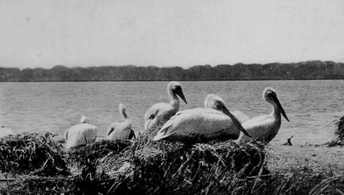
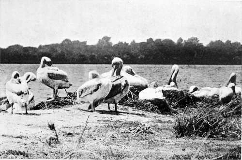

The Balkans Revisited : Albania. Part 3
Description
This section is from the book "Bird-Hunting Through Wild Europe", by R. B. Lodge. Also available from Amazon: Bird-Hunting Through Wild Europe.
The Balkans Revisited : Albania. Part 3
This time we struck out a new route which we imagined would be shorter, and hoped to do the whole journey in one day. As it happened, however, the advantage we had gained in actual distance was lost by the absence of a ferry or ford over the river we had to pass, which we had expected to find lower down nearer the mouth. We found there no signs of any ferry, and from inquiries made among the few people we met on the way it turned out that we should have to ride some distance up the river to reach the ferry we had used last year, which was the only one. We therefore halted at a house close to the extensive ruins of an old Turkish castle, on whose broken walls and crumbling battlements were thousands of Jackdaws, now the only inhabitants of what at one time must have been an important stronghold.
We were as usual most hospitably received, and regaled with cigarettes, coffee, and raki, while they killed and got ready a turkey for our dinner, and prepared sundry weird concoctions in the shape of sweets. Just before the actual dinner was served they brought us the wings, which had been pulled or broken off and roasted.
In the morning we started off again for the ferry, and made for the pine-forest on the opposite side of the lagoon to where we camped last year, having in the meantime picked up our old friends the fishermen, to whom we had sent word to look out for us.
Our camp was pitched by midday under a pine-tree at the water's edge. From the tent-door we could see the white groups of Pelicans clustered on their islands, and swimming about in the lagoon. Numerous Black-headed Gulls were industriously fishing just in front of us ; while in the shallows were wading birds of various descriptions with Squacco Herons and occasional Little Egrets, and overhead were soaring Sea Eagles. These inter-esting glimpses of bird life before us, with the sombre depths of the pine-forests behind, made it an ideal camping-place for two enthusiastic ornithologists.
Pelicans At Their Nests (Pelecanus Crispus)
After a hasty meal we were soon under weigh in the dug-out canoes awaiting us, while our men were busy cutting firewood and getting things snug and shipshape for the night, and preparing a hot dinner ready for our return. On the way we shot a Green-shank, and saw a fine adult Sea Eagle knock over a Black-headed Gull, which it left behind for us to pick up.
The three islands used by the Pelicans were covered with nests. B- took the trouble to count them, and made out 2 50 nests with eggs. Six nests held clutches of three eggs, the rest only two. There were already many freshly hatched young birds, and the eggs without exception were much incubated. They must therefore lay very early in the year, early in February or thereabouts ; and the fresh eggs taken by us in May of the previous year must have been second clutches. This is just what we expected, for in May we found young birds almost as big as their parents ; and others of all ages and sizes. Having picked out some good clutches of eggs, the cleanest we could find in the hope of their being less incubated than the others, we returned to our camp to find everything fixed up comfortably. The men had made for themselves a high wind-screen of pine branches, and built an enormous fire for cooking and to keep themselves warm during the night. To keep the fire going they had piled up a great stack of resinous pine-boughs as big as a haystack.
Presently Marco served us up a most luxurious dinner. The first course consisted of roast leg of lamb cooked to perfection, followed by tinned apricots, after which came Turkish coffee and cigarettes. The coffee, I learnt, was made by one of our su-warries, whose only luggage for four days consisted of an old blanket, a coffee-mill, and a bag of roasted coffee berries. It was exquisite. After such a dinner we felt at peace with all mankind, and enjoyed a short rest before turning in. It was bitterly cold at night in spite of the big fire outside, everything being frozen in the morning, much ice forming on all the puddles. But in spite of the cold the men elected not to put up my double-roofed tent, merely using it as a comprehensive blanket wherewith to cover themselves as they lay round their fire and I dare say they found it warmer. I slept comfortably enough in my bag ; but B--complained of the cold, and the next night used his heavy fur-coat as a counterpane. But the coldest part of all was the wash in the open in the morning, stripped to the waist with a bitter wind blowing enough to cut the flesh off one's bones. Honestly I should have preferred my ablutions inside; but as the Baron started outside I followed suit, as it would never have done for an Englishman to funk cold water. The second morning, however, he was less exacting, somewhat to my relief. As for our men, I don't suppose they washed at all.
Pelicans At Their Toilet
The eggs which we had taken the previous day proved to be a tough job. They were hard sat on, so much so that I spent the whole day over them, while B-went off for some more and to shoot a Pelican or two for me. On his return with a few eggs and a splendid adult male Pelecanus crispus, we both set to work, one at each side of the india-rubber basin, alternately blowing for all we were worth and hauling out young Pelicans with scissors and hooked wires. It was a most unpleasant proceeding snipping them into pieces inside the eggs with fine-pointed scissors, and then hunting and feeling for the fragments, and dragging them very cautiously for fear of bursting open the shells, cutting off the pieces outside when we came to a bit of leg or a head too big- to pass through the hole. Luckily the shells were very big and hard, and I don't think we broke many-but the holes were necessarily rather large for some particular collectors. It was no good taking too many of these eggs, plentiful as they were, for we had to carry them back on horseback a long day's journey over a rough, roadless country. We therefore contented ourselves with as many as could be packed into my shoulder-bag, and I carried them back myself.
Continue to:
- prev: The Balkans Revisited : Albania. Part 2
- Table of Contents
- next: The Balkans Revisited : Albania. Part 4